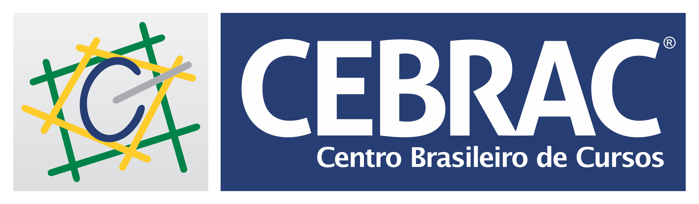
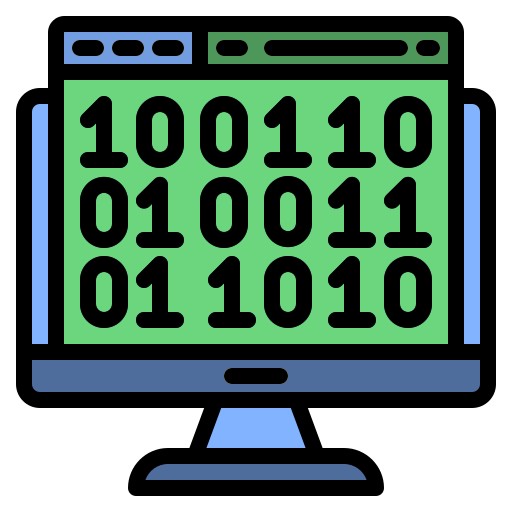

Teclado do computador: A W S E D F T G Y H U J K O L P tocam as notas (as pretas são W, E, T, Y, U, O). Z e X mudam a oitava.
Um som é uma vibração do ar. A frequência (em Hz) é quantas vezes a onda se repete por segundo e define a altura: o Lá central vibra 440 vezes por segundo. A amplitude define o volume.
Subir uma oitava dobra a frequência (razão 2:1). A oitava é dividida em 12 semitons iguais, então cada semitom multiplica a frequência por 21/12 ≈ 1,0595. É o chamado temperamento igual.
f = 440 · 2^((n − 69) / 12)
No padrão MIDI cada nota tem um número de 0 a 127 (7 bits). O Lá4 é o 69 e o Dó central é o 60. Um cent é 1/100 de semitom: cents = 1200 · log₂(f₂/f₁).
O computador guarda o som como amostras: medidas da onda tiradas milhares de vezes por segundo. Seu navegador está usando 44100 ou 48000 amostras/s. Pelo teorema de Nyquist, só dá para representar frequências até a metade desse valor. Um CD usa 44.100 amostras/s × 16 bits × 2 canais = 1.411.200 bits/s. Veja também Tipos de Arquivos (.wav, .mp3, .midi).
Instrumentos diferentes tocando a mesma nota têm harmônicos diferentes (múltiplos da frequência base). A onda senoidal é pura; a quadrada tem só harmônicos ímpares; a dente de serra tem todos; a triangular tem os ímpares, bem fracos. O filtro corta harmônicos agudos e deixa o som mais “abafado”.
Ataque: tempo para chegar ao volume máximo. Decaimento: queda até o nível de sustentação. Sustentação: nível mantido enquanto a tecla está pressionada. Relaxamento: tempo para silenciar depois de soltar. Um piano tem ataque rápido; um violino pode ter ataque lento.
Uma escala é um padrão de semitons. A maior é 2-2-1-2-2-2-1. Em computação, pode ser uma máscara de 12 bits: 1 para as notas que pertencem à escala e 0 para as outras. Veja na aba “Escalas e Acordes”.
Com andamento de B batidas por minuto, cada batida dura 60/B segundos. Cada passo do sequenciador é uma semicolcheia, ou seja, 1/4 de batida. Em 120 BPM, são 0,125 s por passo.
Escreva a música como um programa e clique em Tocar. O som usa o instrumento configurado no topo da página.
C4 nota (letra, # ou b, oitava) · C4:2 dura 2 tempos · R:1 pausa · [C4 E4 G4]:2 acorde · bpm 120 andamento · onda square (sine, square, sawtooth ou triangle) · repetir 4 { ... } laço · padrao nome { ... } define um bloco que você usa depois escrevendo só nome · instrumento suave (suave, pluck, pad, baixo ou 8-bit) · junto { voz { ... } voz { ... } } toca várias vozes ao mesmo tempo (defina o bpm antes) · transpor 2 { ... } soma semitons às notas · // comentário
Ligação com Algoritmos: as notas escritas em ordem são uma sequência de instruções; repetir é uma estrutura de repetição (laço); padrao é uma função (sub-rotina) reutilizável. Desafio: escreva uma música de 16 compassos usando no máximo 10 linhas.